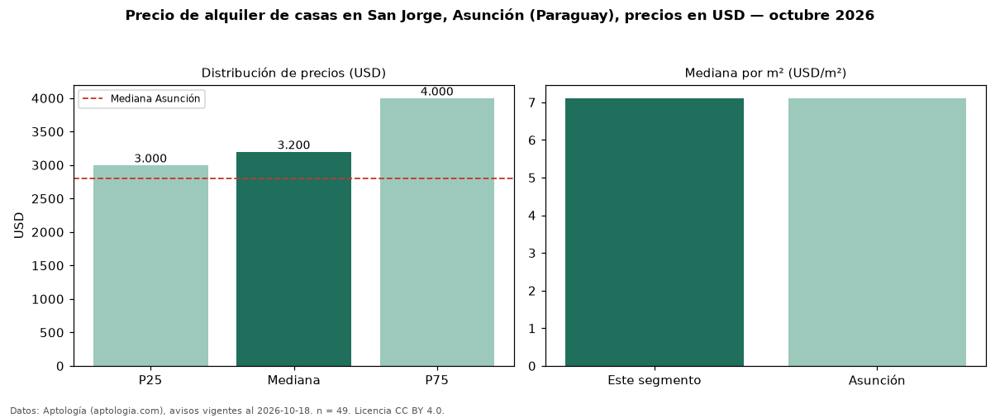

Precio de alquiler de casas en San Jorge, Asunción (Paraguay), precios en USD — octubre 2026
USD 3.200 al mes es el canon mediano de casas en alquiler en San Jorge, Asunción (Paraguay) (n = 49 avisos). Eso es 14 % por encima de la mediana de Asunción para casas (USD 2.800). Por metro cuadrado, la mediana es USD 7,11/m² al mes (n = 45 avisos con área), 0 % por encima de Asunción (USD 7,11/m²). Por precio mediano es el puesto 2 de 16 barrios de Asunción con al menos 30 avisos de casas en alquiler (USD): entre las más caras. Con el precio por m² de venta del mismo segmento (USD 1.450/m²), la rentabilidad bruta implícita es 5,9 % anual (aproximación con medianas de ofertas distintas). El área mediana anunciada es 450 m². El segmento con más oferta es el de 3 o más habitaciones (47 avisos, mediana USD 3.200). La mitad central de los avisos va de USD 3.000 a USD 4.000 (razón 1,3), una dispersión baja. Datos: Aptología (aptologia.com), CC BY 4.0 — https://www.aptologia.com/py/alquiler/asuncion/san-jorge. Archivos: PDF, CSV con las cifras y gráfica PNG.

| Avisos únicos | 49 |
|---|---|
| Percentil 25 | COP 3.000 |
| Mediana | COP 3.200 |
| Percentil 75 | COP 4.000 |
| Mediana por m² | COP 7 |
Fuente: avisos vigentes de portales inmobiliarios recopilados por Aptología, deduplicados (mínimo 30 avisos únicos por celda). Precios pedidos, no cerrados. Fecha: 2026-10-18.